Room 1 r12：更多 PixelLab 墙面差分
保持r11已认可的材质基调，增加4张PixelLab差分，拆分为16种原生墙板细节；同面墙不重复使用同一个墙板。B比较r11／r12。来源与用量
游戏左／中／右，r11 → r12
 game_left_before
game_left_before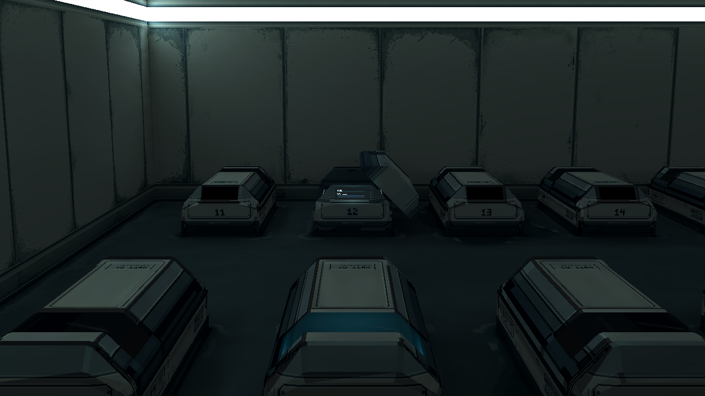
game_left_after game_center_before
game_center_before game_center_after
game_center_after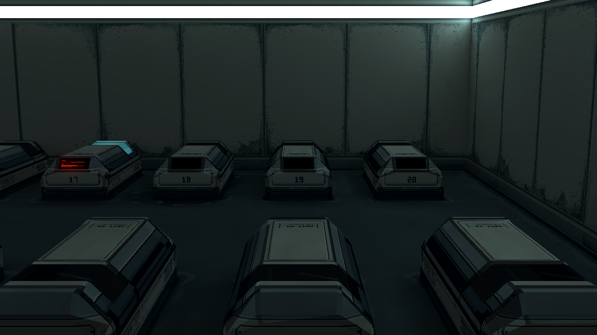
game_right_before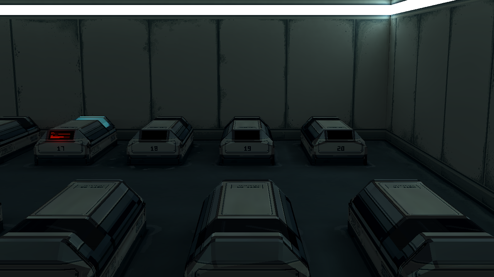
game_right_after近景比较
 technical_before
technical_before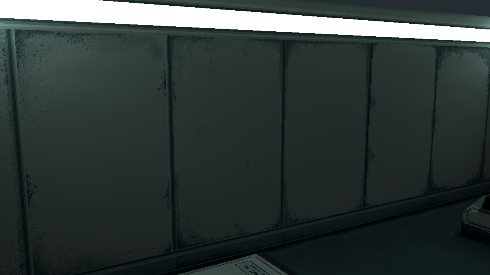
technical_after四墙安排，r11 → r12
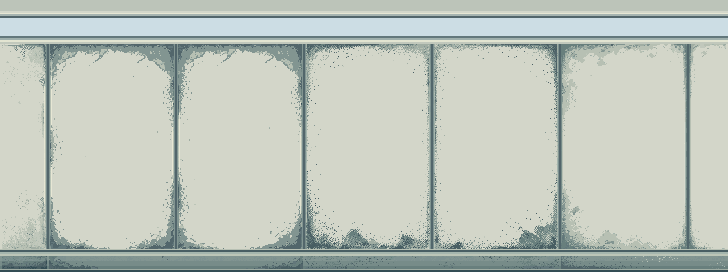
map_left_before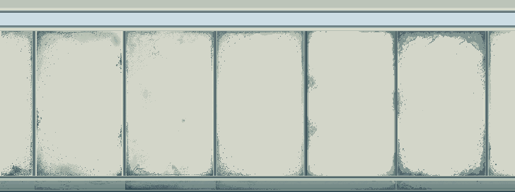
map_left_after map_right_before
map_right_before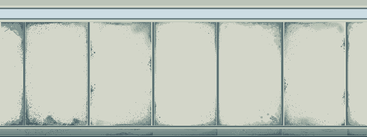
map_right_after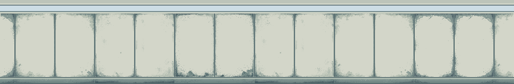
map_front_before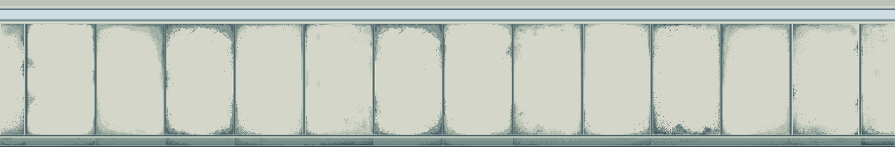
map_front_after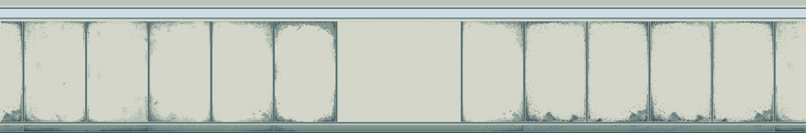
map_rear_before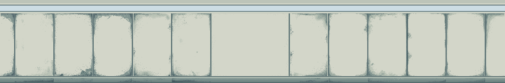
map_rear_after四角与前墙巡检
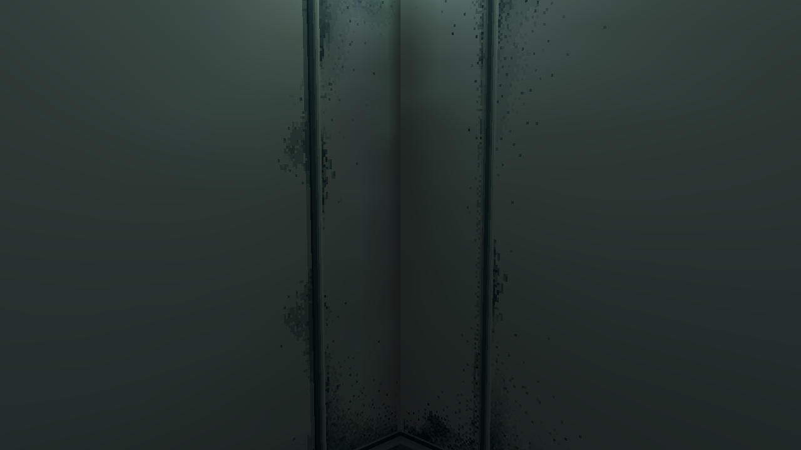
survey_front_left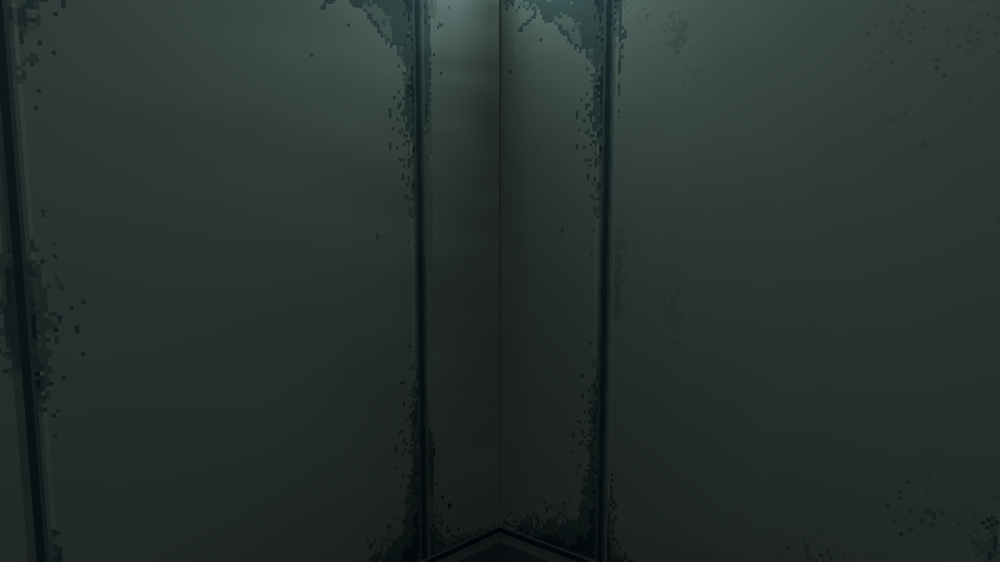
survey_rear_left survey_front_right
survey_front_right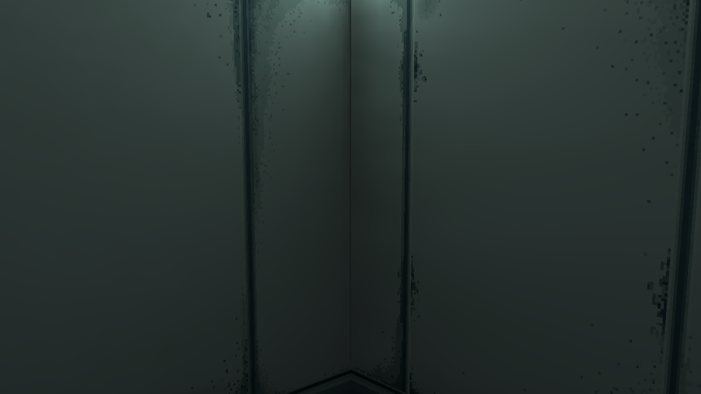
survey_rear_right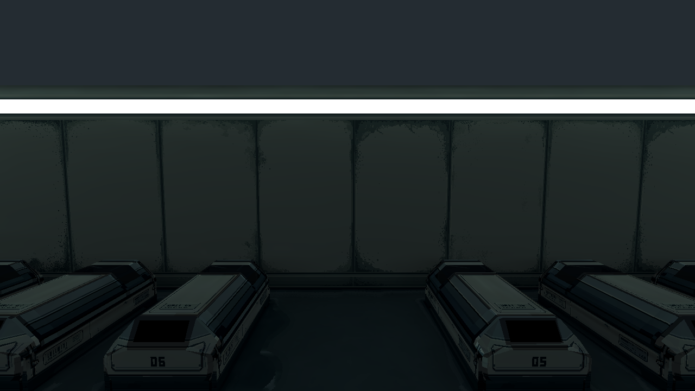
survey_front_full16种原生墙板像素（2倍最近邻）
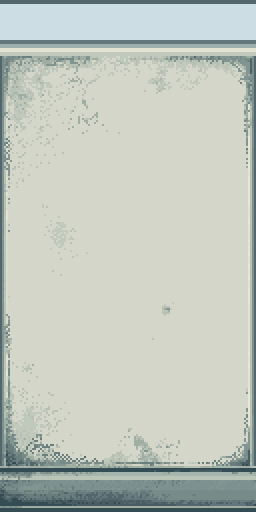
a0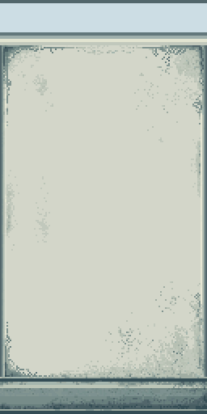
a1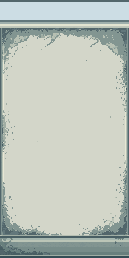
b0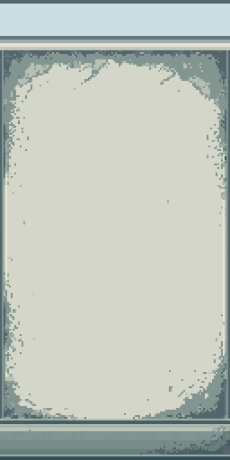
b1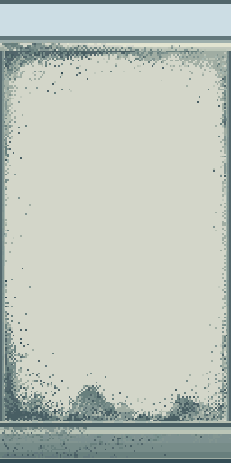
c0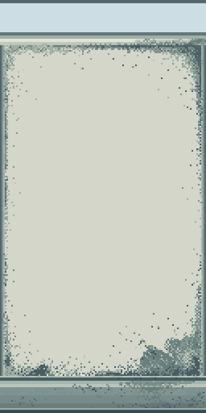
c1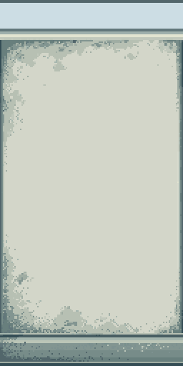
d0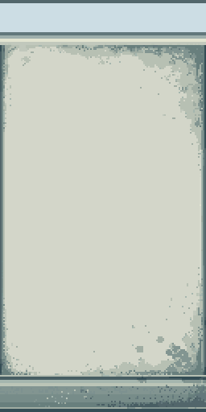
d1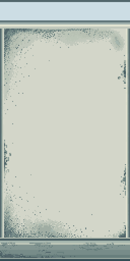
e0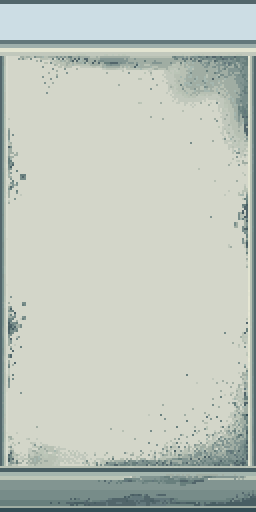
e1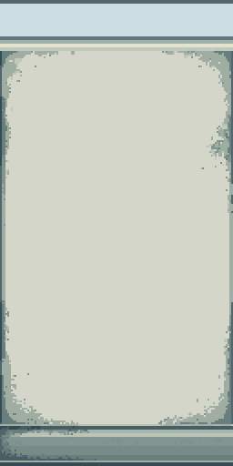
f0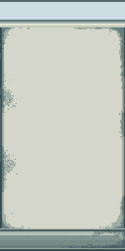
f1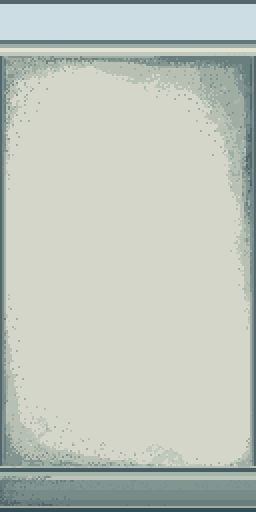
g0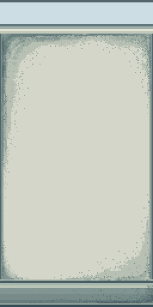
g1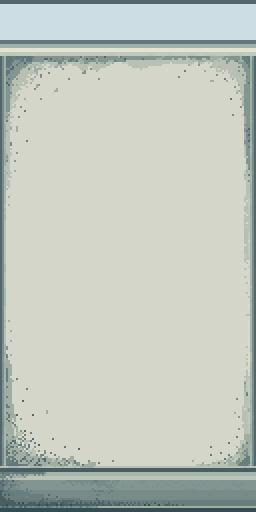
h0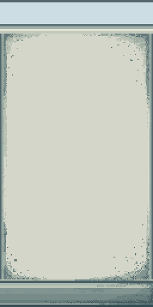
h1